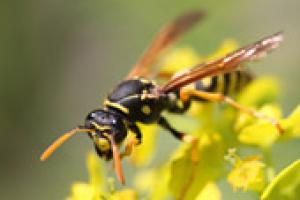

Vosy dosahují velikosti 1,2–1,5 cm. Charakteristické zbarvení vosy obecné je černožlutý pruhovaný zadeček. Samice a dělnice se odlišují třemi skvrnami na čelním štítku s tmavým podélným pruhem a žlutými spánky s černou skvrnou uprostřed.
Vosy si staví své hnízdo obvykle v zemi, např. v lesích, podél břehů vod a cest, někdy také v tmavých dutinách nad zemí. Žije v něm celá vosí kolonie čítající až 2000 jedinců. Přezimující oplodněná královna se probouzí na počátku jara, vylétá a vybere si vhodné místo pro založení nové vosí kolonie. Začne se stavbou buněk, do nichž pak klade vajíčka.

Zpět